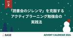
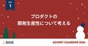

BASEプロダクトチームブログ
https://devblog.thebase.in/
ネットショップ作成サービス「BASE ( https://thebase.in )」、ショッピングアプリ「BASE ( https://thebase.in/sp )」のプロダクトチームによるブログです。
フィード

チーム開発を進めるために意識していること 1
1
BASEプロダクトチームブログ
本記事はBASEアドベントカレンダー2024の8日目の記事です。 はじめに BASE Feature Dev1 Group アプリケーションエンジニアの @yuna_miyaaです。 実は、私がBASEに転職してもうすぐ3年ですが、前職はなんとパティシエでした！ (受託会社を経て現在入社しております) 少し変わった経歴なのでなんでエンジニアに？はもう100回以上は聞かれています。 現在も副業でパティシエを続けられているので、いつか「パティシエとエンジニアの共通点」というテーマで記事を書いてみたいと思っています。 さて、今回はエンジニアとしての話題。 私は現在、スクエア連携App開発のリーダーを…
13時間前

整理整頓のメソッドでお問い合わせ業務の改善をした話 1
BASEプロダクトチームブログ
この記事はBASE アドベントカレンダー7日目の記事です。 6日目の昨日はasakoyaさん！妊娠から復帰までの体験記がとても参考になるので興味ある方は是非ご覧ください。 はじめに こんにちはBASEのProduct Dev / Feature Dev1 GroupでアプリケーションエンジニアをしているTorataです。 突然ですが、みなさんそろそろ年末で大掃除の時期ですが整理整頓やってますか？ ブラックフライデーで買いすぎて無理やり収納してるもの、なかなか捨てる踏ん切りがつかず家に残ってしまっているものはありませんか？ そんな大掃除でもやるであろう整理整頓ですが、これには王道のステップがあり…
2日前

妊娠・出産・育休を経てHopefulに働いている話
BASEプロダクトチームブログ
本記事はBASEアドベントカレンダー2024の6日目の記事です。 はじめまして、BASEでエンジニアをしているasakoyaです。 2022年10月にBASEに入社し、Merchant Management Devというチームで、不正決済対策や法改正対応など、決済に関する開発に取り組んでいます。 2024年1月に第1子の男の子を出産し、10月に職場復帰したばかりです。 初めての妊娠・出産・育児に挑戦する中で、BASEのサポート体制に助けられたことがたくさんありました。この経験が誰かの参考になればと思い、筆を取りました。 なお、BASEは男性でも育休を取得される方がとても多く、関連したブログ記事…
3日前

【入社エントリー】BASEに入社して2ヶ月を振り返る 1
BASEプロダクトチームブログ
devblog.thebase.in 本記事はBASEアドベントカレンダー2024の5日目の記事です。 はじめに BASE Feature Dev2 Groupでバックエンドエンジニアをしている大塚(@ohiro88)です。 10月1日に入社し、2ヶ月が経過したので入社してから現在までを振り返ってみようと思います。 これまでの経歴 インターネット広告代理店（ASP） → 求人広告メディア → BASE という感じです。 新卒でエンジニアとして入社してからずっとPHPをメインで使用しています。 BASEに入社するきっかけ 前職では求人メディアのバックエンドエンジニアをしていました。 エンジニアと…
4日前

若手エンジニアがBASE入社6ヶ月目で感じていること 4
BASEプロダクトチームブログ
はじめに BASE BANKの出金Dev Group でエンジニアをしている池田聖示です。 2024/07に入社し、今月で6ヶ月目になりました。 今までどのような取り組みをしてきたのか、何を感じたのかなどを書きたいと思います。 自己紹介 妻と4歳の息子がいます。 エンジニア経験としては、大学時代の長期インターン1年と新卒で入社した企業で2年ほどの計3年、主にバックエンドエンジニア（タスクに応じてフロントエンドの開発なども行っていた）として働いていた状態で入社しました。 なので本ブログは、主にエンジニア経験年数の短いand子育てしている私にとってBASEがどのような環境かという視点で書いています…
5日前

Terraform Provider for HatenaBlog Members を使ってみました。 12
BASEプロダクトチームブログ
<この記事は Hatena-Blog-Workflows-Boilerplate によって作成されました> こんにちは！ BASE 株式会社 Pay ID 兼 BASE PRODUCT TEAM BLOG 編集局メンバー の @zan_sakurai です。 今回は、BASE PRODUCT TEAM BLOG のブログメンバーを Terraform Provider for HatenaBlog Members で管理をはじめたので、その紹介をいたします。 前回は、Hatena-Blog-Workflows-Boilerplate を使ってとある SaaS のリンクを一括置換した話について書…
6日前

「読書会のジレンマ」を克服する: 成果を生むアクティブラーニング勉強会の実践法 1
BASEプロダクトチームブログ
この記事は BASE アドベントカレンダー2日目の記事です。 勉強会の隠れた課題「読書会のジレンマ」に立ち向かう BASEでシニアエンジニアをしているプログラミングをするパンダです。 この記事では普通の社内読書会をレベルアップする方法を紹介します。自分の所属するチームでは2ヶ月に渡る勉強会でこの方法を実践した結果、参加者の全員が書籍の内容をしっかり学べたという手応えを感じています。実際に、チームメンバー全員から今までよりも効果的な読書会だったと感想を貰えました。 結論を先に書くと、その方法は自分たちが触っているレポジトリから書籍の内容に当てはまるところと、書籍の内容を実現できていないところを探…
7日前

プロダクトの開発生産性について考える 6
BASEプロダクトチームブログ
はじめに こんにちは！BASE株式会社で開発担当役員をしているえふしんです。 今年もBASEグループ 2024年のアドベントカレンダーのトップバッターを務めさせてもらっています。 今回の記事では、2024年では、Xのタイムラインなどでよく聞いた「開発生産性」について考えてみたいと思います。 開発生産性を高めるとは 開発生産性という言葉を今年よく聞きましたが、その定義は、なかなか難解です。 生産性を定義する難しさについては、廣木さんの下記ドキュメントが参考になります。 qiita.com 経営レベルのマクロな意味であれば、GDPなどと同様に単純に 「売上総利益 ÷ 開発に携わる人数」 などでいい…
8日前

🎄🎅 BASE PRODUCT TEAM BLOG Advent Calendar 2024 🎅🎄
BASEプロダクトチームブログ
こんにちは！BASE PRODUCT TEAM BLOG 編集部です。みなさまそろそろ年の瀬ですが、いかがお過ごしでしょうか。 今年も恒例のBASEメンバーによるアドベントカレンダーを開催します！ 毎年公開しているアドベントカレンダーも今年で7回目を迎えます。 過去の様子 2023年のアドベントカレンダー 2022年のアドベントカレンダー 2021年のアドベントカレンダー 2020年のアドベントカレンダー 2019年のアドベントカレンダー 2018年のアドベントカレンダー 今年も1日1記事に限定せずたくさんのバラエティ豊かな記事を公開する予定です。 公開され次第以下のカレンダーも随時更新してい…
8日前
システムリニューアルでNext.jsのApp Router/Server Actionを使って便利だと思ったところ
BASEプロダクトチームブログ
はじめに こんにちは、Pay IDのフロントエンドエンジニアのnojiです。 普段はPay ID あと払いやPay IDのアカウント周りのフロントエンド開発を担当しています。 10月にPay IDのアカウント編集画面（こちら）をリニューアルしました。この記事では、そのリニューアルプロジェクトでNext.jsのApp Router / Server Actionを活用し、便利だと感じた点をご紹介します。 使用技術 Next.js 14（リリース当時のもの。現在は15になっています） React 18（リリース当時のもの。現在は19になっています） リニューアルの背景 今回のリニューアルは、PAY…
9日前
UIKitベースのiOSアプリにSwiftUIを導入する際に直面した課題と取り組み
BASEプロダクトチームブログ
はじめに こんにちは。BASE株式会社 Pay IDでiOSアプリエンジニアをしているkakkkiです。iOS版のPay ID ショッピングアプリの開発を担当しています。 iOS版Pay IDアプリ(以下Pay IDアプリ)はリリースされてから9年以上、新機能開発を行いながら継続的に運用されています。普段の業務では機能開発を進める一方で、マルチモジュール化やStrict Concurrency対応、SwiftUIへの移行など継続的に技術的な改善に取り組んでいます。 Pay IDアプリ内に古くから存在する画面の多くはUIKitベースで実装されていますが、最近はSwiftUIで実装された画面が増え…
10日前
Fullstack AI Dev & Raycast Summitにスポンサーしました！
BASEプロダクトチームブログ
はじめに はじめましての人ははじめまして、こんにちは！先週木曜日ぶりです！BASE BANK Division（以下、BANKチーム）のフロントエンドエンジニアのがっちゃん（ @gatchan0807 ）です。 今回は 11/23（土） に開催された 「Fullstack AI Dev & Raycast Summit feat. Satoshi Nakajima」にスポンサリング・スポンサートークをしました！というご報告記事になります！ スポンサリングしたイベントについて 今回スポンサリングしたイベントは「Fullstack AI Dev & Raycast Summit feat. Sat…
10日前
社内LT会で半年間、毎月登壇をし続けた話 〜実際の登壇内容も添えて〜
BASEプロダクトチームブログ
はじめに はじめましての人ははじめまして、こんにちは！BASE BANK Division（以下、BANKチーム）のフロントエンドエンジニアのがっちゃん（ @gatchan0807 ）です。 今回はBANKチームの中で職種横断で行っている「月次会」というLT会について紹介させてください！ この月次会（LT会）を毎月実施していることで、チームにとってどんなメリットがあるのか？や、実施における工夫を知っていただき、皆さんのチームでもスモールスタートで実施してみていただけるととっても嬉しいなと思っています！ また、今回は記事のタイトルの通り、その月次会で半年間（実際には2月~10月の計8回）、毎月様…
17日前
Hatena-Blog-Workflows-Boilerplateを使ってとあるSaaSのリンクを一括置換した話
BASEプロダクトチームブログ
<この記事はHatena-Blog-Workflows-Boilerplateによって作成されました> こんにちは！ BASE株式会社 Pay ID の @zan_sakurai と申します。 BASE PRODUCT TEAM BLOG 編集局メンバーも務めています。(実は今年の編集長です。) 今回は、Hatena-Blog-Workflows-Boilerplateを使ってとあるSaaSのリンクを一括置換した話をします。 Hatena-Blog-Workflows-Boilerplate Hatena-Blog-Workflows-Boilerplateとは、 株式会社はてなさんが公式で公…
1ヶ月前
AWS Aurora MySQL v3 アップグレード時のgh-ostの活躍について
BASEプロダクトチームブログ
BASE も Aurora MySQL v3 となりました SRE Groupの ngsw です。 2024/10/14〜10/15の深夜メンテナンスにて、BASEで利用しているAmazon Aurora MySQLのバージョンは、v2系からv3系となりました。 アップグレードの前提条件で大きなつまずきがありましたが、gh-ost を利用することで、乗り越えることができました。 この記事では当該アップグレードの中で gh-ost をどのように利用し、どういう恩恵を受けたかについて述べていきます。 おさらい : v3 対応しないとどうなるの？ Aurora MySQL v2は標準サポート終了が発…
1ヶ月前
新入社員のオンボーディングをするエンジニアのための「メンターの心得」
BASEプロダクトチームブログ
新しい方を受け入れる側のマインドセットです。 はじめに BASE の Product Dev Division でシニアエンジニアをしているプログラミングをするパンダ（@Panda_Program）です。 入社されて3ヶ月目で同じチームで働いている Torata さんが「入社して感じたBASEのいいなと思うところ」という入社エントリを書いてくれたので、新入社員を受け入れる側からのアンサー記事です。 以下はBASE社内の人なら誰でも読むことができる文書で、特にこれからメンターになる人には読んで貰っているものです。自分が受け入れ側として数ヶ月間特に意識しており、手応えがあったことを書き残しています…
2ヶ月前
YELL BANKチームにjoinして5ヶ月経ったので、振り返ります
BASEプロダクトチームブログ
はじめに BASE BANK Division で エンジニア をしている岩本と申します！ YELL BANKの開発を担当しています。 2024年5月にBASEへjoinして早いもので5ヶ月ほどが経ちました。 joinしてからいくつかのプロジェクトを担当してきました。 改めて考えるとオンボーディングがとても充実していたおかげで円滑にプロジェクトに入っていけたのだなぁと感じます。 そこで、オンボーディングを中心にこれまでの5ヶ月を振り返りつつ、チームが新規メンバーのキャッチアップに向けて、どのような取り組みを行っているかを紹介させて頂こうと思います！！ 前置き 本題に入る前に前置きです。 私の普…
2ヶ月前
BASE BANK, 中小規模のエンジニアイベントにも会場&飲食スポンサーします！
BASEプロダクトチームブログ
こんにちは！ BASE BANKです。 最近は大きなカンファレンスだけでなく様々なコミュニティのオフラインイベントも増え、かつて以上の活気で溢れているなと感じています。 我々BASE社も大小さまざまなカンファレンス、イベントにスポンサーをさせていただいておりますが、今回はBASE BANKとしてももっとスポンサーの頻度をあげていくぞ！スポンサーさせてください！という内容の記事です。 BASE BANKって? スポンサーの理由やイベントとのマッチングのために、まずは軽くBASE BANKについて自己紹介させてください。 BASE BANKはBASE社の1事業部です。 「銀行をかんたんにし、全ての…
2ヶ月前
入社して感じたBASEのいいなと思うところ
BASEプロダクトチームブログ
はじめに BASEのProduct Dev / Feature Dev1 GroupでアプリケーションエンジニアをしているTorataです。 BASEに入社して早くも3ヶ月がたちました。 少しづつBASEの仕事や環境、文化にも慣れてきたので振り返りを兼ねて入社エントリーを書こうと思います。 BASEに興味を持っている方の参考になれば嬉しいです！ 入社の経緯 前職では、新卒から約5年間、バックエンドエンジニアとして働いていました。 周りには信頼できる素晴らしい方々が多く、幅広い経験をすることができました。 ただ自身のキャリアを考えたときに、より大きなチームで大規模なシステムを扱う経験を積みたい、…
2ヶ月前
全員集まったのはキックオフと振り返りだけ。定例もDailyもないPJから機能リリースしてわかったこと
BASEプロダクトチームブログ
はじめに こんにちは。Product Management Group で プロダクトマネジメント をしている坂東（@7auto）です。 リソース的な問題で「やるべきことがたくさんあって、小さめの改善やPJに手が回らない」そんなお悩みを持つ方はたくさんいらっしゃるのではないでしょうか。 サービスが大きくなるとPJの規模も大きくなっていきます。その結果、小さめのPJや改善の優先度が下がりがちになります。 一方で、小さめのPJや改善はサービス利用者の声から生まれることも多く、これを放置し続けることはサービス体験の悪化に繋がります。 そこで大きなPJと並行して、こうした小さめのPJや改善に対し「最小…
3ヶ月前
小さなチームでプロダクトを前に進めるためにフロントエンドエンジニアができること
BASEプロダクトチームブログ
はじめに はじめましての人ははじめまして、こんにちは！BASE BANK Divisionのフロントエンドエンジニアのがっちゃん（ @gatchan0807 ）です。 ネットショップ作成サービス「BASE」の開発チームからBASE BANKチームに社内異動をして、チームの人数が半分以下のチームになってから約半年が経ちました。 そんなチーム環境の変化と共に、私がどんなことを考えるようになったのか、BASE BANKチームとはフロントエンドエンジニア目線でどのようなチームなのかを、「小さなチームでフロントエンドエンジニアという職種で働くことの面白さ」と合わせて紹介させてください！ 個人的には、今回…
3ヶ月前
Welcome Fintech Community #2 〜Fintechドメインを深掘るLT会〜を開催しました！
BASEプロダクトチームブログ
こんにちは！ BASE BANK Divisionの松雪です。 8/5に Welcome Fintech Community #2を開催しました。 お盆を挟んでドタバタしていたら3週間ほど経ってしまいましたが、今回も大盛況だったのでその様子をお届けします！ Welcome Fintech Communityについて コミュニティ立ち上げの経緯はこちらに記載しているのでぜひご覧ください。 devblog.thebase.in 6/20に開催した第1回がありがたいことに大反響だったため、鉄は熱いうちに打て!ということで1ヶ月半ほどで第2回を開催しました。 今回は第1回の懇親会で是非次があれば話した…
3ヶ月前
「良いコード/悪いコードで学ぶ設計入門」を題材に輪読会を開催しました
BASEプロダクトチームブログ
はじめに こんにちは。ProductDev FeatureDev3 でエンジニアをしています、enduです。 先日、自分が所属するチームで「良いコード／悪いコードで学ぶ設計入門」という本を題材に輪読会を開催しました。 gihyo.jp この記事では、「良いコード/悪いコードで学ぶ設計入門」を読もうと思った背景や、チームで実際に行った輪読会の進め方、輪読会を通じて得た学びについて共有できればと思います。 輪読会を開催した背景について BASEではショップを独自にカスタマイズする拡張機能として「Apps」を提供しています。 自分が所属するチームでは特に「Google商品連携・広告 App」や「In…
4ヶ月前
AWSのDMSやブルー/グリーンデプロイを使ってMySQL8.0へ移行した話
BASEプロダクトチームブログ
はじめに Data Strategyチーム（以下、DSチーム）でDWHやBIツールの運用をしている@shota.imazekiと不正検知やAWS基盤運用をしている@tawamuraです。 Aurora MySQL v2（MySQL5.7互換）が2024/10/31に標準サポート終了となるため、DSチームでは2024年6月にAurora MySQL v3（MySQL8.0互換）へのアップグレードを実施しました。 その際に得られた課題や知見について紹介していきます。主にAWS DMSやAmazon RDS ブルー/グリーンデプロイを用いたアップグレード方法の話になります。 DSチームのインフラ構成…
4ヶ月前
Welcome Fintech Community #1を開催しました！
BASEプロダクトチームブログ
welcome fintech communityのバナー。かっこいい！ こんにちは！ BASE BANK Divisionの松雪です。 今回、金融決済の技術領域を中心としたコミュニティを立ち上げ、6月20日にイベントを初開催しました。 その模様をお届けします。 Welcome Fintech Communityとは? 特定の技術や職能に関するコミュニティは数多くありますがfintechに関するコミュニティは少なく、fintech領域を盛り上げていくために知見やお悩みの共有ができるようもっとオープンなコミュニティがほしいなと感じていました。 そんなとき、EMゆるミートアップでスマートバンク社の…
5ヶ月前
スクラムフェス大阪2024でBASE BANKのメンバーが2名登壇しました!
BASEプロダクトチームブログ
こんにちは。BASE BANKです。 先週BASE BANKメンバーの登壇やイベント参加が偶然重なったため、今週は実質イベントレポウィークとなっております。 今回は去る6月21, 22日に開催されたスクラムフェス大阪2024での登壇についてコメントをお届けします！ スクラムフェス大阪2024 今回参加したスクラムフェス大阪は、オンライン開催ではありますが大阪をはじめとした各サテライト会場が存在し、トラックごとに各会場の名前がつけられていました。 そのため、スクラムフェス”大阪”の”仙台”トラックだが”虎ノ門”会場から登壇など、なかなかハイコンテキストな状態になっている人もおり、ユニークでそれも…
5ヶ月前
PHPカンファレンス福岡 2024にBASE BANKのエンジニアが登壇しました
BASEプロダクトチームブログ
はじめに BASE BANK Division で フルサイクルエンジニア をしている02 （@cocoeyes02）です。 2024/06/22（土）に開催されたPHPカンファレンス福岡 2024に登壇しました。今回の記事では登壇についてのコメントと、会場の様子についてお届けします！ 今回のセッション 今回は15分枠での登壇です。 speakerdeck.com 02 @cocoeyes02 さんのトークがはじまっています❣️#phpconfuk#hall_hz https://t.co/AFxNus3Zay pic.twitter.com/DyCkj3fD8D— PHPカンファレンス福岡 …
5ヶ月前
AWS Summit Japan 2024に参加しました
BASEプロダクトチームブログ
はじめに BASE BANK Division で フルサイクルエンジニア をしている02（@cocoeyes02）です。 AWS Summit Japan 2024のDay 1にオンサイトで参加してきたので、現地の様子をお届けします！ AWS Summit Japan 2024とは？ AWS Summit Japan 2024とは、2024/06/20〜2024/06/21に開催されたAmazon Web Services（以下AWS）を学ぶイベントです。 参加登録人数は5万人を超えるなど、文字通り日本最大のAWSを学ぶイベントになります。 aws.amazon.com 会場まで AWS S…
5ヶ月前
リアーキテクチャをお手伝いするDryRunというツールを作りました
BASEプロダクトチームブログ
はじめに Platform Group の久保田（ @ykbt13 ）です！ BASEではリアーキテクチャとしてバックエンドの既存機能を旧リポジトリから新リポジトリへ移行する作業を日々行っています。詳しく知りたい方はぜひこちらを参照してください。 www.youtube.com そんななか、BASEにおけるコア機能の1つである商品の発送機能の移行が行われました。しかしながら、コア機能であるがゆえに様々な改修が繰り返されて複雑化してしまった発送機能では移行前の動作を保証する術がテストのみでは不安があります。 そこで、リアーキテクチャを円滑に進めるべく、本番環境上で移行前後の処理を同時実行しデータ…
6ヶ月前
「メール送信者のガイドライン」に対応しました
BASEプロダクトチームブログ
はじめに BASE Feature Dev1 Group の cureseven です。 Google と米Yahoo が定めた「メール送信者のガイドライン」が、2024/06/01に対応の最終締め切りを迎えました。 BASE から送信しているプロモーションメールも対応が完了しましたので、対応する過程で起こったトピックを紹介します。 「メール送信者のガイドライン」とはなにか簡単に説明 1回でも月あたり 5,000件以上個人メールにメールを送信したことがあるドメインを持つ「一括送信者」は、以下の規定に則ってメールを送信する必要があります。 DMARC の対応 プロモーションメールには、購読解除ヘ…
6ヶ月前